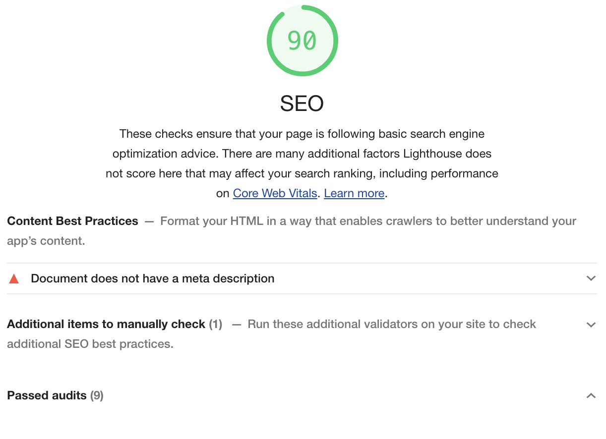
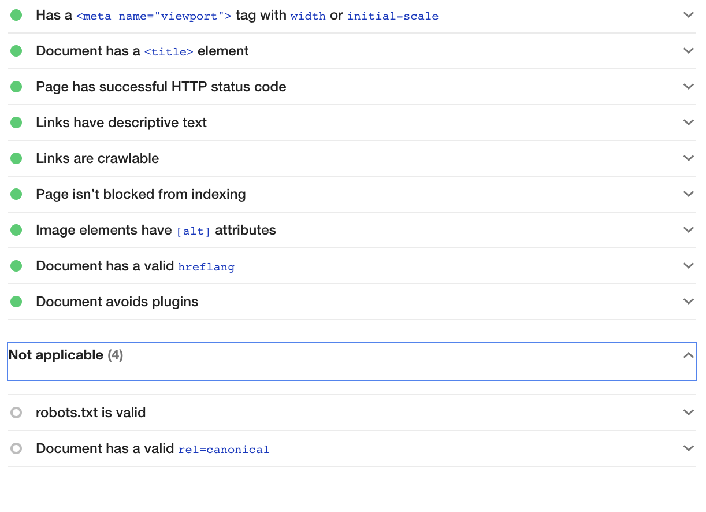
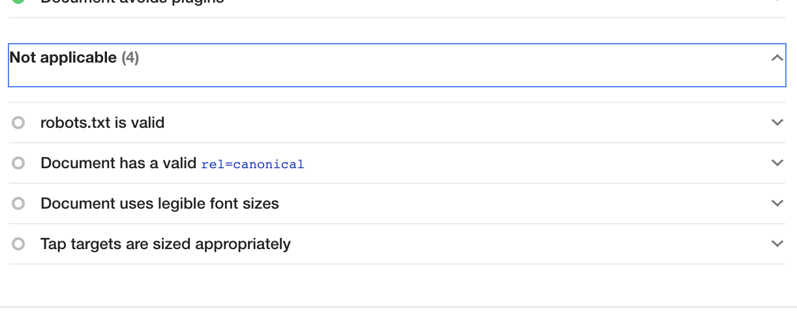
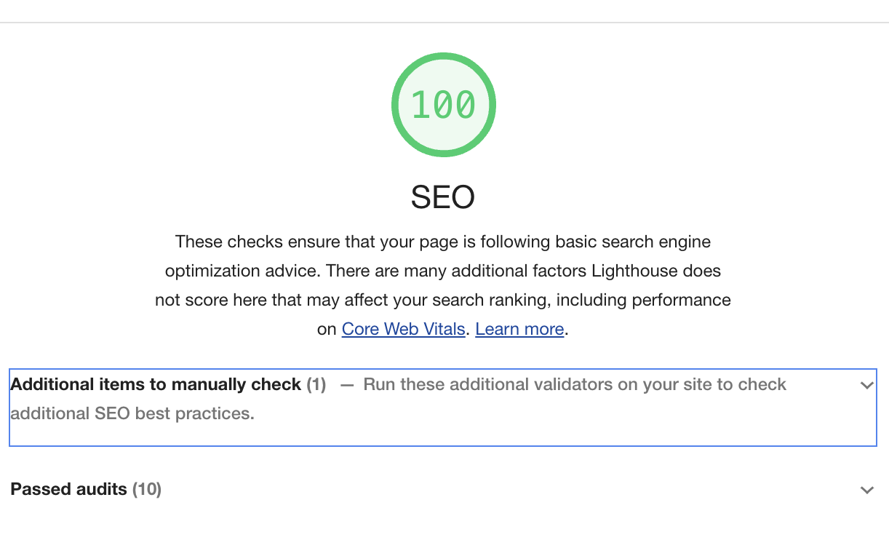

Min-SEO
SEO handler om å få nettsted din til å rangere høyere på relevante søkeord knyttet til det inholdet nettsiden din handler om. SEO er med andre ord når de skriver et ord søkeord så kommer nettsiden din oppe. f.eks nyhet så vil da nett-aviser komme oppe. Å ha et bra SEO er viktig fordi jo bedre SEO du har i nettsiden din jo lenger leseren vil bruke tid i nettsiden din.

bilden over viser min SEO før jeg starta å fikse på det. Det fikk jeg ved å ha nettside min oppe i google chorme. også trykke på inspier deretter velge lighthouse.
  I bildene over så gi viser google meg jeg har gjørt feil. Google gir meg også tips på hvordan jeg kan få en bedre SEO i mitt nettside. Ved å fikse kode eller å legge inn kode, det første jeg gjøre er at jeg gikk gjennom tips.
(meta name="description" content="Forfatter: Gorgos Tammo ,Her kan du lese Html-skjma og hvordan de fungerer") element jeg har vist oppe gir en oppsummering av nettsidens innhold som søkemotorer inkludere i søkeresultatene. Det jeg gjøre var at jeg satt Eksmpelt mitt i head. Hvis man bruker det koden riktig kan sgjøre gjør at siden din fremstår mer relevant og kan øke søke trafikken din. Som jeg nevnte istad jo bedre SEO jo mer tid og besøk.
Min andre feil var at jeg brukte ikke les bar skriftstølerse, jeg fiksa det ved å bruke (meta name="viewport" content="width=device-width, initial-scale=1.0"). Den koden gjengir mobile enheter sider med typiske skrivebordsskjermbredder og skalerer sidene ned, dette gjør det vanskeligere fåe lesren å lese. Når du skriver denne viewport-metakoden kan du kontrollere bredden og skaleringen av viewporten slik at nettsiden din tillpaser seg riktig størrelse på det enheter leseren bruker.
Etter jeg fiksa på alt jeg la min "nye fil" i failza og Kjørte jeg lighthouse igjen og jeg fikk 100 seo.
Hjem